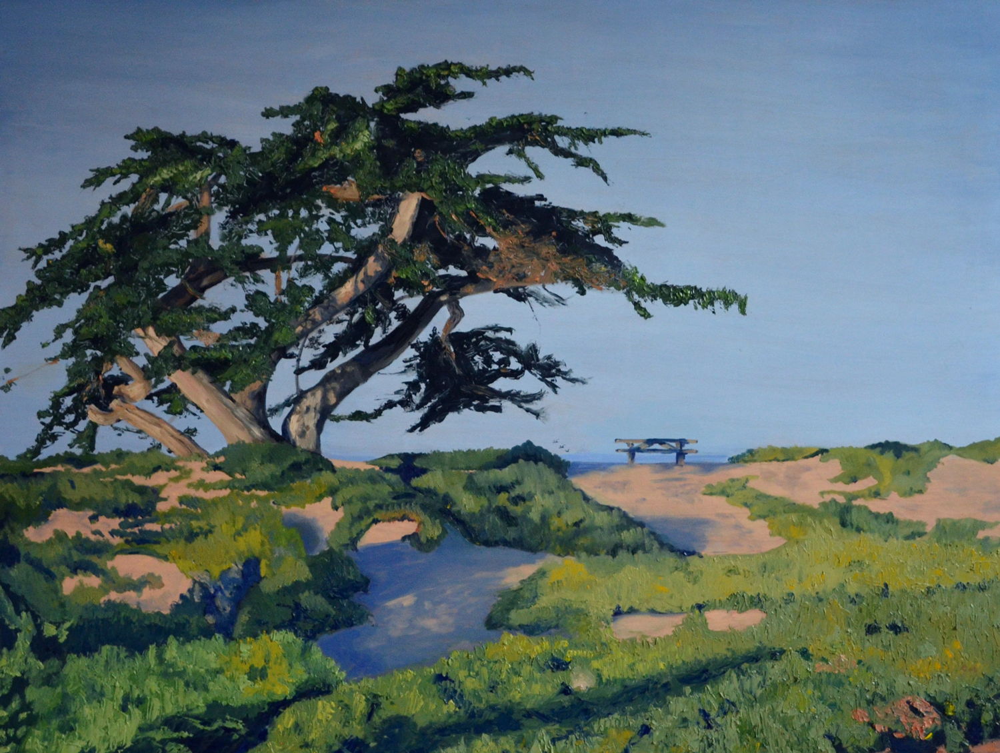

Restoration
36" x 48"
Nostalgia
This collection was inspired by my many camping trips to Carpinteria, CA. I was curious about nostalgia and the effect of memories and familiarity upon my art. To convey the fickle nature of memories and feelings of nostalgia, the artwork has a looser painting style with some elements playfully askew. All art pieces in this show are oils on wood.
California Classic
24" x 24"
Steadfast
24" x 36"
Morning Walk
12" x 12"
Day Off
12" x 12"
The Spot
16" x 24"
Turbulent
12" x 12"
Robataille's
16" x 24"
Cruisin'
24" x 24"

Eventide
24" x 42"
Local Therapy
12" x 12"
Nostalgia
Heritage Gallery at Azusa Pacific University
September-December 2017